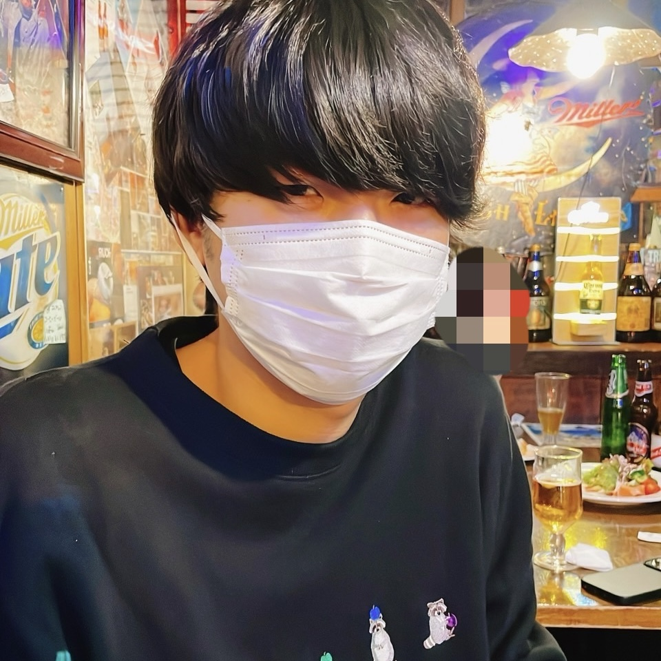
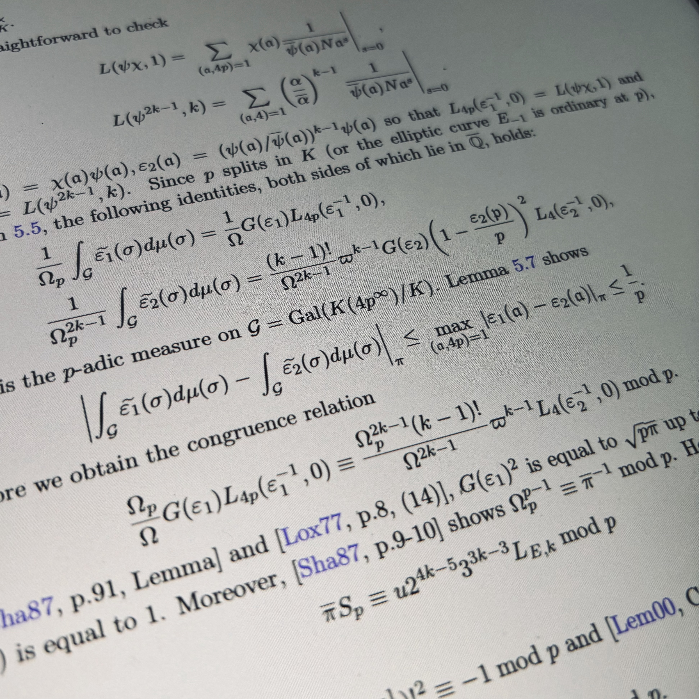
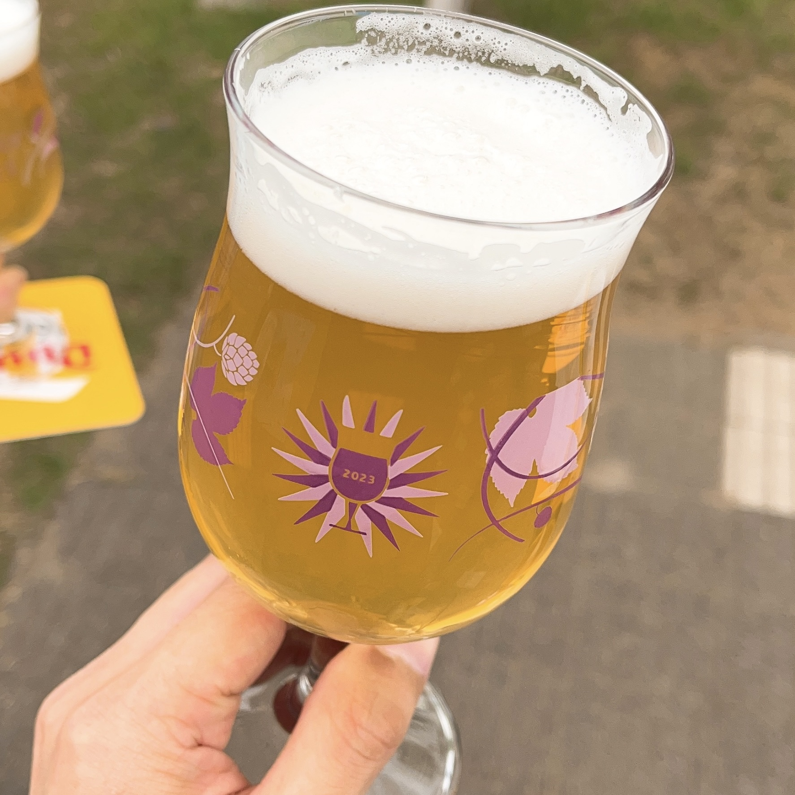
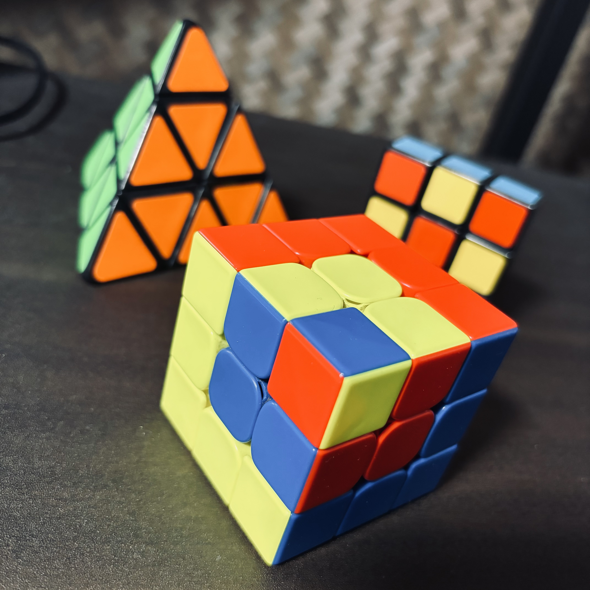

基本情報
名前: 野本 慶一郎
生年月日: 1995年9月8日
出身: 愛知県豊田市
メール: nomotokeiichiro"at"gmail.com

研究
研究テーマは主に整数論と同種写像暗号です. 特に整数論では楕円曲線のL関数の特殊値に興味があり, 保型形式等の解析的な道具を用いて楕円曲線の代数的な量を調べることが好きです.

ビール
大学時代, バイト先の先輩にキャスティールというベルギービールを教わり, そこからベルギービール沼にハマった. もちろんベルギーに限らず世界中のビールが大好き.
各国のビールが飲める最もおすすめのお店は福岡県の中洲にある コットン・フィールズ というお店. タコスとスペアリブが絶品なので, 訪れた際には是非食べてみてほしい. ちなみにタイトル画像はこのお店の写真である. 雰囲気も良き.

ルービックキューブ
当時中学3年生のとある日, 自室に帰ると何故か新品のルービックキューブが置いてあった (たぶん父親が買ってきた). 付属の説明書を参考にしながらではあるが初めて6面を揃えられたことに感動し, 高速に揃える方法や他のサイズのルービックキューブ等に手を出し始めてしまう. 高校生くらいの頃には15秒程度で揃えられたはずだが, 今では忘れてしまった手順も多く40~50秒もかかってしまう. だんだん早く揃えることに対する追求心が減り, 作業に集中する際の手遊び用になってしまっているのが現状.
